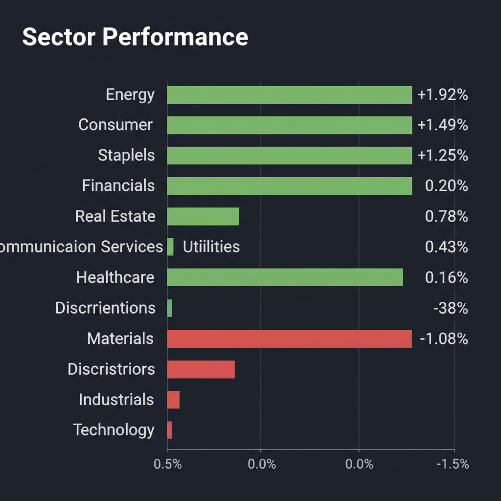
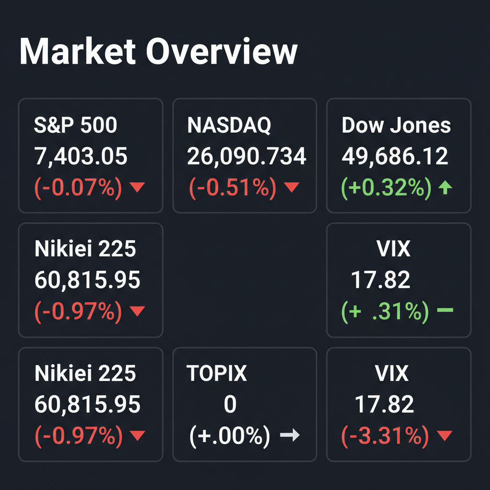

Daily Investment Report - 2026-05-19
Generated: 2026/5/19 7:30:50


本日の投資チームミーティングの分析を統合した、投資家向けの最終レポートをお届けします。
1. エグゼクティブサマリー
- 米国市場は、少数の高バリュエーションな大型ハイテク株から、バリュー株やディフェンシブ株、中小型株への資金移動（セクターローテーション）が明確に進行しています。
- 地政学リスク（中東情勢）に伴うインフレ再燃と世界的な金利の高止まりが警戒されており、インデックス全体（S&P 500等）へのブラインドな投資は極めて危険な局面にあります。
- 今後は、強力なフリーキャッシュフロー（FCF）を創出するニッチな中小型株への選別投資と、テールリスクに備えた厳格なダウンサイドヘッジを組み合わせる戦略が不可欠です。
2. 注目銘柄リスト
強気（買い推奨）
- AudioEye (AEYE) [時価総額: 極小〜数億ドル規模]: デジタルアクセシビリティを自動化するSaaS企業です。法規制の追い風を受けており、好決算発表後の株価下落は単なるノイズであり、高い粗利率とストック収益を狙える絶好の押し目買いチャンスです。
- Pennant Group (PNTG) [時価総額: 約10億ドル台]: シニア向けケア施設を運営する企業です。高齢化という構造的な追い風の中、小規模施設の堅実な連続買収（ロールアップ戦略）によって着実に利益を成長させており、金利高環境下でも自力でキャッシュを生み出せる点が評価できます。
- Quince Therapeutics (QNCX) [時価総額: 超小型]: バイオテック企業であり、直近で最大1億8700万ドルの資金調達を完了しました。資金ショートのリスクが大きく後退しており、ポートフォリオの数%で爆発的なリターン（大化け）を狙う大勝負の対象として魅力的です。
中立（様子見）
- Agilysys (AGYS) [時価総額: 約30億ドル規模]: ホスピタリティ業界向けのクラウド基幹システムを提供し、強気なガイダンスで株価が14%急騰しました。成長ストーリーは本物ですが、テクニカル的には過熱感があり、窓埋めライン等での明確な下値サポートを確認してからのエントリーが賢明です。
- ゆうちょ銀行 (7182) [時価総額: 大型 / 約6兆円規模]: 2ケタ増収増益と金利正常化の恩恵を受ける日本株のバリュー銘柄です。ファンダメンタルズは良好ですが、日本市場全体の強い下落モメンタム（日経平均の連続陰線）に巻き込まれるリスクがあるため、一括投資は避け分割エントリーを推奨します。
弱気（警戒）
- フォルクスワーゲン (VOW3.DE) [時価総額: 大型]: PERは非常に割安に見えますが、ブラジル等の新興国市場で中国EVメーカーとの熾烈な価格競争に直面しています。将来のキャッシュフロー縮小が市場に織り込まれており、低PERに釣られて手を出すとバリュートラップ（割安の罠）に陥る危険があります。
- 三菱商事 (8058) [時価総額: 大型]: 決算発表を機に6%近い大幅続落となり、テクニカル的に「落ちるナイフ」の様相を呈しています。洋上風力発電などのグリーンエネルギー事業におけるインフレ・コスト増が収益を圧迫するピークアウト懸念があり、新規エントリーは厳禁です。
3. セクター推奨ランキング
1.
エネルギー（XLE）: イラン情勢など中東の地政学リスクに対する究極のインフレヘッジとして機能します。また、AIデータセンターの膨大な電力需要という構造的な恩恵も受けるため、最優先で組み入れるべきセクターです。
2.
金融（XLF / 銀行株）: 世界的な債券売り（利回り上昇）が進行する中、景気後退を伴わない「高金利の長期定着」シナリオにおいて、利ざや拡大の直接的な恩恵を最も受けるセクターです。
3.
サイバーセキュリティ: 企業のIT予算の中で最も削られにくい不況耐性を持つと同時に、国家間紛争等の地政学リスクが高まるほど需要が増すため、テクノロジー領域の中で最も手堅い投資先です。
4.
生活必需品（XLP）: マクロ環境の不確実性が高まり、スタグフレーション（インフレ＋景気後退）が警戒される現在、資金の逃避先（ディフェンシブ枠）として下値を強固に支えます。
5.
メガキャップ・テクノロジー（XLK）（※アンダーウェイト推奨）: 高金利環境下では現在の極端に高いバリュエーションを正当化することが難しく、すでにスマートマネー（機関投資家）による利益確定の資金流出が始まっています。
4. 今週の注目イベント
- トランプ次期政権とイランの交渉進展状況、および中東・ロシアに関連する地政学ヘッドラインの監視
- 中小型株（特にサイバーセキュリティやSaaS関連）の決算発表における、将来ガイダンス（業績見通し）の強弱の確認
- 米国債券市場の利回り上昇（金利高止まり）の推移と、それに伴うVIX指数（恐怖指数）の突発的な変動の有無
5. リスク要因
- スタグフレーションの顕在化: 中東情勢の突発的な悪化により原油価格が急騰し、インフレ再燃と企業業績の悪化（景気後退）が同時に進行するリスク。
- メガテック株のマルチプル・コンプレッション（バリュエーション崩壊）: インフレ粘着化による「高金利の長期化」が、少数銘柄に極端に集中しているAI・ハイテク株のPERを急激に引き下げ、インデックス全体を巻き込む暴落を引き起こすリスク。
- 見せかけの低ボラティリティ: VIX指数が17台と低く抑えられている裏で世界的な債券売りが進行しており、市場の慢心がブラックスワン・イベント発生時のパニック的な売りを増幅させるリスク。
- ガバナンス不全とバリュートラップ: エア・ウォーターの事例に見られるような過度な業績プレッシャーによる会計不正や、新興国コングロマリット（アダニ等）のコンプライアンス・リスク。
6. アクションアイテム
- 現金比率の引き上げ: S&P 500等のインデックス連動商品や、高バリュエーションの大型ハイテク株のポジションを一部利益確定し、ポートフォリオの現金（キャッシュ）比率を意図的に高めてください。
- ダウンサイドヘッジの構築: 市場が静かな（VIXが低い）今のうちに、VIXのコール・オプションやテクノロジー・セクター（XLK等）のプット・オプションを少額仕込み、ポートフォリオの保険を確保してください。
- 中小型優良株の監視と指値設定: AudioEye（AEYE）など、高いフリーキャッシュフロー創出力を持つ中小型SaaS銘柄をウォッチリストに入れ、テクニカルな底打ち（ダブルボトムや明確なサポートラインでの反発）を確認したポイントに分割エントリーの指値を設定してください。
- バリュートラップの排除: 自身のポートフォリオの財務諸表を確認し、黒字化の目処が立たない赤字企業や、中国企業との苛烈な価格競争に巻き込まれているレガシー企業を無条件で損切り（または除外）してください。